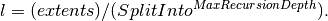

MergeMD dialog.
Table of Contents
| Name | Direction | Type | Default | Description |
|---|---|---|---|---|
| InputWorkspaces | Input | str list | Mandatory | The names of the input MDWorkspaces as a comma-separated list |
| OutputWorkspace | Output | MDEventWorkspace | Mandatory | Name of the output MDWorkspace. |
| SplitInto | Input | int list | 2 | A comma separated list of into how many sub-grid elements each dimension should split; or just one to split into the same number for all dimensions. Default 2. |
| SplitThreshold | Input | number | 500 | How many events in a box before it should be split. Default 500. |
| MaxRecursionDepth | Input | number | 16 | How many levels of box splitting recursion are allowed. The smallest box will have each side length  Default 16. |
This algorithm merges several MDWorkspaces together into one by adding their events together.
The algorithm starts by going through the list of MDWorkspaces to find the extents that fully encompass all input workspaces in each dimension. The number and names of dimensions must match for all input workspaces.
The output workspace is created with these dimensions and the box parameters specified above. Then the events from each input workspace are appended to the output.
See also
MergeMDFiles v1, for merging when system memory is too small to keep the entire workspace.
Example - merge two MD workspaces:
from mantid.api import IMDEventWorkspace
# Create sample inelastic workspace for MARI instrument containing 1 at all spectra
ws1=CreateSimulationWorkspace(Instrument='MAR',BinParams='-10,1,10',UnitX='DeltaE')
AddSampleLog(ws1,'Ei','12.','Number')
# get first MD workspace;
mdWs1 =ConvertToMD(InputWorkspace=ws1,QDimensions='|Q|',QConversionScales='Q in A^-1',MinValues='0,-10',MaxValues='5,10')
# Create another inelastic workspace
ws1=CreateSimulationWorkspace(Instrument='MAR',BinParams='-5,1,15',UnitX='DeltaE')
AddSampleLog(ws1,'Ei','20.','Number')
# get second MD workspace;
mdWs2 =ConvertToMD(InputWorkspace=ws1,QDimensions='|Q|',QConversionScales='Q in A^-1',MinValues='0,-5',MaxValues='10,15')
# Merge MD workspaces
SumWS=MergeMD(InputWorkspaces='mdWs1,mdWs2',SplitInto='100,100')
# check it looks like the one we wanted
print('merged workspace of type: {0}'.format(SumWS.id()))
# this is how you would check whether it is a general MDEventWorkspace
print('it is a type of MDEventWorkspace: {0}'.format(isinstance(SumWS, IMDEventWorkspace)))
print('****************************************************************')
print('workspace 1 has {0} dimensions with {1} points and {2} events'.format(mdWs1.getNumDims(),mdWs1.getNPoints(),mdWs1.getNEvents()))
d1=mdWs1.getDimension(0);d2=mdWs1.getDimension(1)
print('with d1 min_max={0}:{1}, d2 min_max={2}:{3}'.format(d1.getMinimum(),d1.getMaximum(),d2.getMinimum(),d2.getMaximum()))
print('workspace 2 has {0} dimensions with {1} points and {2} events'.format(mdWs2.getNumDims(),mdWs2.getNPoints(),mdWs2.getNEvents()))
d1=mdWs2.getDimension(0);d2=mdWs2.getDimension(1)
print('with d1 min_max={0}:{1}, d2 min_max={2}:{3}'.format(d1.getMinimum(),d1.getMaximum(),d2.getMinimum(),d2.getMaximum()))
print('****************************************************************')
print('Merged WS has {0} dimensions with {1} points and {2} events'.format(SumWS.getNumDims(),SumWS.getNPoints(),SumWS.getNEvents()))
d1=SumWS.getDimension(0);d2=SumWS.getDimension(1)
print('with d1 min_max={0}:{1}, d2 min_max={2}:{3}'.format(d1.getMinimum(),d1.getMaximum(),d2.getMinimum(),d2.getMaximum()))
print('****************************************************************')
Output:
merged workspace of type: MDEventWorkspace<MDEvent,2>
it is a type of MDEventWorkspace: True
****************************************************************
workspace 1 has 2 dimensions with 18231 points and 18231 events
with d1 min_max=0.0:5.0, d2 min_max=-10.0:10.0
workspace 2 has 2 dimensions with 18360 points and 18360 events
with d1 min_max=0.0:10.0, d2 min_max=-5.0:15.0
****************************************************************
Merged WS has 2 dimensions with 36591 points and 36591 events
with d1 min_max=0.0:10.0, d2 min_max=-10.0:15.0
****************************************************************
Categories: AlgorithmIndex | MDAlgorithms\Creation
C++ header: MergeMD.h (last modified: 2018-10-05)
C++ source: MergeMD.cpp (last modified: 2019-11-08)